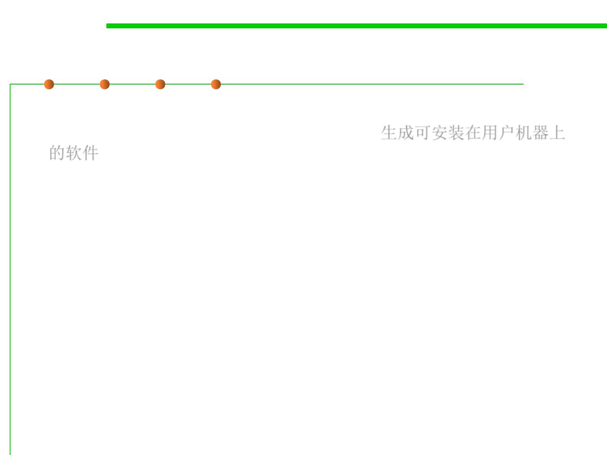

2.2 Process, Systems, and Tools of Software Construction
Components of a Build System
▪ Release Packaging and Target Machines: produces something that
you can actually install on a user’s machine. 生成可安装在用户机器上
的软件
– To extract the relevant files from the source and object trees and store
them in a release package.
– The release package should better be a single disk file and should be
compressed to reduce the amount of time it takes to download.
– Any nonessential debug information should be removed so that it doesn’t
clutter the software’s installation.
▪ Types of packaging:
– Archive files: zip and unzip
– Package-management tools: UNIX-style such as .rpm and .deb
– Custom-built GUI installation tools: Windows-style